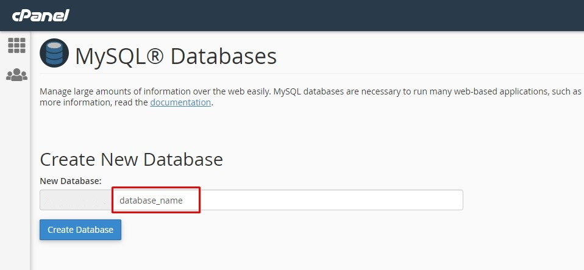
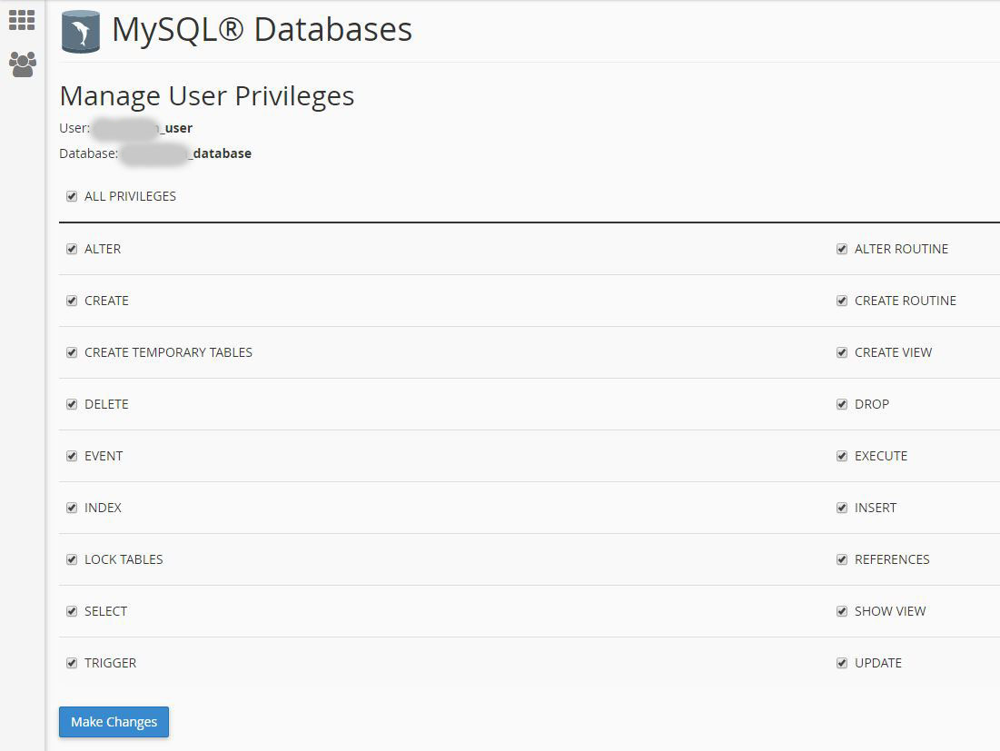
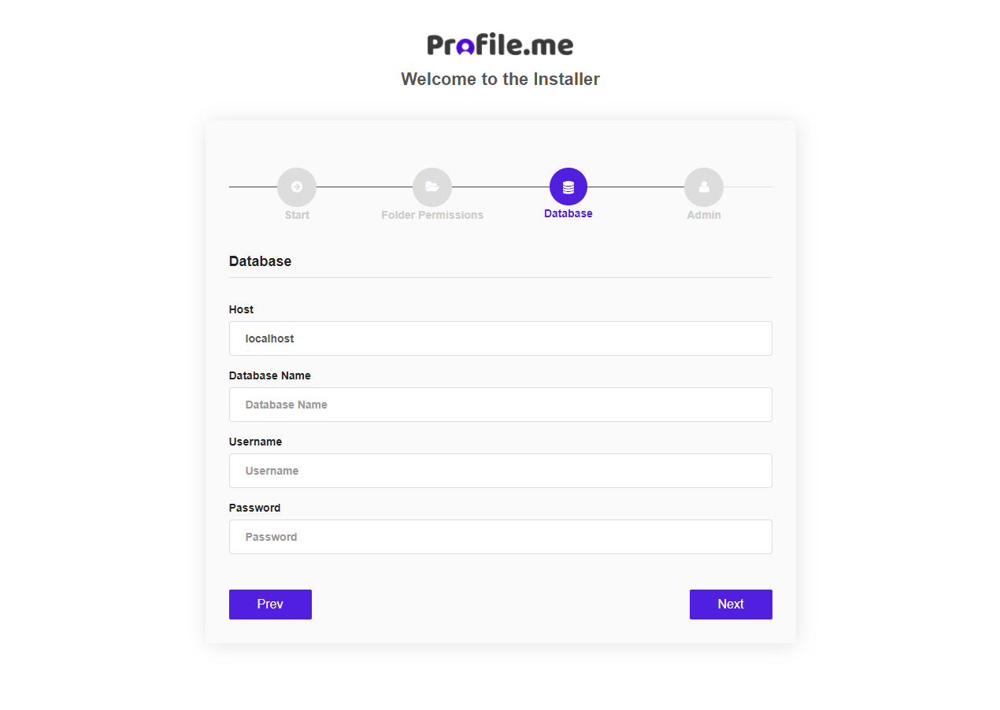

“Profile.me ” Multiuser profile & resume script Documentation by “Codericks
“Profile.me”
Created: 01.15.2019
By: Codericks
Email: codericks.envato@gmail.com
Thank you for purchasing my script for your project. If you have any questions that are beyond the scope of this help file, please feel free to email via my user page contact form here. Thanks so much!
Table of Contents
- Introduction
- Quick Install
- Quick Start Guide
- Settings
- Manage Users
- Manage Home Services
- Manage Package
- Manage Pages
- Profile Settings
- Manage Services
- Manage Skills
- Manage Experiences
- Manage Testimonials
- Manage Portfolio
- Manage Blogs
- Manage Appointment
- Manage Contacts
- Update Password
- Credits
1) Introduction - top
Profile.me is a multiuser profile, resume and vcard script. It comes with clean, secured, responsive, SEO friendly & eye-catching design which will attract your future employer with the first impression. You can easily add your Services, Experiences, Skills, Portfolios & Blogs without any coding skills. This script is perfect to promote yourself and your business, focused for: multiuser, portfolio, freelancer, photographer, artworks, art, artist portfolio, web designer, illustrators, designer, developers, programmers & coder.
Technologies used:- PHP CodeIgniter 3
- HTML 5
- CSS (Bootstrap 4)
- JQUERY
- AJAX
- Latest CodeIgniter 3.1.7
- Bootstrap
- Easy Integration & Customization
- Standared & clean code
- Fully Responsive Design
- SEO Optimized & SEO-Friendly URL
- Manage website with unllimlited features, packages & pages
- Manage Contact Messages
- Ajax username checker
- reCaptcha enable / disable opiton
- Google Analytics
- Google reCaptcha attached with (Register & Contacts forms with enable or disable option)
- Advanced settings option
- Unlimited Google fonts & color options
- Admin & User panel
- Multiuser options
- Membership System with Free & Pro users
- Two different designs for free & pro user
- Paypal payment system
- Manage Services
- Manage Skills
- Manage Experiences
- Manage Testimonials
- Manage Contact & Comments
- User based portfolio system
- User based blog system
- User based Google Analytics
- Ajax secure Authentication
- Jquery Data tables & form validations
- Sweetalert popup notification with ajax
- Toaster notification with ajax
- Detailed Documentation with commented code
- Totally Secure System
- Advanced Settings Options with Enable or Disable options
- Change Logo, Favicon, Site Title, Site Description, etc. from Admin Panel
- Easy Installation Using Installation Wizard & no need any coding skills
- Runs on PHP 5.3+ (and PHP 7)
Security:
There are various mechanisms to secure application. These mechanisms are:
- Cross-Site Request Forgery (CSRF) Prevention
- Cross-Site Scripting (XSS) Prevention
- Password Hashing
Requirements:
There are some requirements to work on your server. These requirements are:
- PHP >= 5.3+ (and PHP 7)
2) Install - top
To Install this project:
Note: Please check your PHP version before installing. In order to work properly, your PHP version should be at least 5.4. We recommend PHP 5.5 to PHP 7.0.
1. Create a new Database with user that has all permissions.- Go to Cpanel and Click MySQL® Databases

- Step 1: Create New Database
 - Step 2: Add New User

- Step 3: Add User To Database

- Step 4: Set User Permissions

3. Run the Install file by entering this link to your browser address bar: http://yourdomain.com/install
4. Follow the Installation Instructions below.
-
Enter your Envato item Purchase code and click "Get License" button. If you are a valid user you will see the next step.
- Check your folder permissions. If all folders are writable, click Next

-
Enter your database credentials. Then click next.

***Note: If you want to change your database credentials later, you can edit the database.php file in the application / config folder. -
Enter your admin credentials. Then click finish.
5. Delete the install folder on the main directory.
Still no luck
After installation, if you get "404 Not Found" error or you can not login to your site, please upload & replace again the htaccess file from script files and.
3) Quick Start - top
After run project, you will be see the login page like this.
For access use this: www.domain.com/login
username: admin
password: 1234
Admin
✓ Change Admin Password: If you want to change Admin password you should go to "Change Password" section from left sidebar and change the password.✓ Manage Website Settings: If you want to add your site name, email, phone, about, designation, logo, favicon, basic seo options, social links you need to go "Dashboard > Settings" section from left sidebar. you can manage all options here.
✓ Manage users: If you want to manage registered users you need to go "Dashboard > Users" section from left sidebar. you can manage all users here.
✓ Manage Site Service: If you want to manage your site service you need to go "Dashboard > Service" section from left sidebar. you can manage all option here.
✓ Manage Package & Feature: If you want to manage site Package & Features you need to go "Dashboard > Package / Features" section from left sidebar. you can manage all option here.
User
✓ Manage Services: If you want to add Service you will see from left sidebar "Services" menu and here you will see this manage options when you click. And you can manage Service CRUD in an one pages.✓ Manage Skills: If you want to manage your Skills you will see from left sidebar "Skills" menu and here you will see this manage options when you click. And you can manage Skills CRUD in an one pages.
✓ Manage Experience: If you want to manage your Experience you will see from left sidebar "Experience" menu and here you will see this manage options when you click. And you can manage Experience CRUD in an one pages.
✓ Manage Testimonial: If you want to manage your Testimonial you will see from left sidebar "Testimonial" menu and here you will see this manage options when you click. And you can manage Testimonial CRUD in an one pages.
✓ Manage Portfolio: If you want to add Portfolio first you need add Portfolio Category to go "Portfolio" section from left sidebar navigation and click on the "Add Category" options then you can add Category here in one page CRUD. And then Clink "Portfolio" section from left sidebar navigation to add "Portfolio".
✓ Manage Blog: If you want to add Blog first you need add Blog Category to go "Blog" section from left sidebar navigation and click on the "Add Category" options then you can add Category here in one page CRUD. And then Clink "Blog" section from left sidebar navigation to add "Blog".
✓ Manage Appointment: If you want to add your available day in a week and show all appointments for you need to go "Appointment" section from left sidebar navigation and then you will see all options in there.
✓ Manage Contacts: If you want to see/manage your Contacts you will see from left sidebar "Contacts" menu and here you will see this manage options when you click.
Admin Panel
4)Manage Website Settings - top
✓ Manage Website Settings: From left sidebar > Dashboard you can manage name, email, phone, about, designation, logo, favicon, basic seo options, fonts & colors, social links.5)Manage Users - top
✓ Manage Users: From left sidebar > Dashboard > Users you can manage all users here.6)Manage Home Services - top
✓ Manage Services: From left sidebar > Dashboard > Services you can manage Services for home pages.7)Manage Pricing Package - top
✓ Manage Pricing Package: From left sidebar > Dashboard > Pricing Package you manage your site packages here.8)Manage Pages - top
✓ Manage Pages: From Dashboard > Pages you can add, edit 7 Delete unlimited pages .
User Panel
9)Manage Profile - top
'Profile' section from dashboard sidebar user can edit profile image, name, about me text, favicon, social settings, colors & fonts.10)Manage Services - top
'Services' section from dashboard sidebar you can add, edit, delete, active / deactive Services.11)Manage Skills - top
'Skills' section from dashboard sidebar you can add, edit, delete, active / deactive Skills.12)Manage Experience - top
'Experience' section from dashboard sidebar you can add, edit, delete, active / deactive Experience.13)Manage Testimonial - top
'Testimonial' section from dashboard sidebar you can add, edit, delete, active / deactive Testimonial.14)Manage Portfolio - top
'Portfolio' section from dashboard sideber you can add Portfolio Category from navigation.✓ Add Portfolio: From Dashboard > Portfolio > Portfolio: you can Add, Edit, Delete, Activate or Deactivate Portfolio from this option.
15)Manage Blog - top
'Blog' section from dashboard sideber you can add Blog Category from navigation.✓ Add Blog: From Dashboard > Blog > Blog: you can Add, Edit, Delete, Activate or Deactivate Portfolio from this option.
16)Manage Appoinments - top
✓ Manage Appoinments: From Dashboard > Appoinments you can manage your appoinments.17)Manage Contacts - top
✓ Manage Contacts: From Dashboard > Contact Messages Pages you can view, Delete Contacts.18)Change Password - top
✓ Change Password: From Dashboard > Change Password options you can update your password here.19) Credits - top
Profile.me script uses the following libraries and assets:- CodeIgniter 3
- Bootstrap 3
- Ajax
- Jquery
- Sweetalert
- Toaster
- Simple line icon
- Fontawesome icon
Codericks